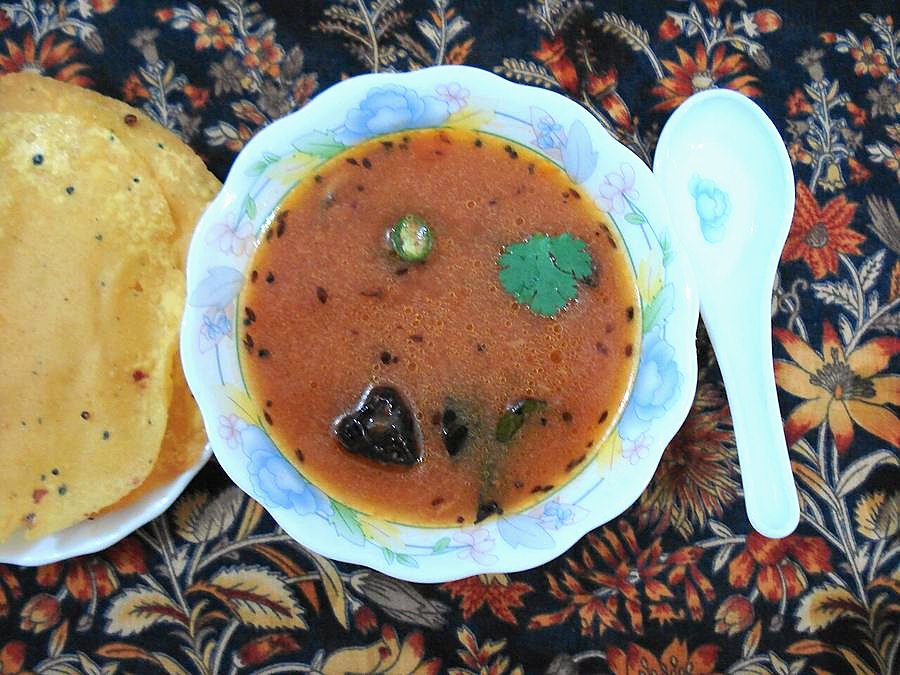

Contains: milk, mustard
Ingredients
Quantities for 4.
- lime-sized ball, soaked in 1 cup hot water Tamarind
- 2 medium, squashed by hand Tomato
- 3 tbsp, cooked very soft and mashed Toor Dalthe dal water is what makes it cloudy, not thick
- 2 tsp Rasam Powder
- 1 tsp, coarsely crushed Black Peppercrush just before using
- 1 tsp, coarsely crushed Cumin Seeds
- 4 cloves, lightly crushed Garlicskin on is fineoptional
- 1/4 tsp Turmeric
- 1/4 tsp Asafoetidause compounded-free hing to keep this gluten-free
- 1 sprig Curry Leaves
- 2, broken Dried Red Chilli
- 1 tsp Mustard Seeds
- 1 tbsp Gheefor the tempering
- 3 tbsp, chopped with stems Coriander Leavesoptional
- 3 cups Water
- to taste Salt
Cookware
stovetop
Checked against the ingredient list for ten allergens: milk, egg, fish, crustaceans, tree nuts, peanuts, sesame, mustard, soy and gluten. Brands vary, so read the label on anything new to you.
Before you start
- Cook 3 tbsp toor dal with 1 cup water until collapsing, and keep both dal and its water.
- Soak the tamarind in hot water for 15 minutes, then squeeze and strain out 1 cup of thick extract.
- Crush the pepper and cumin together coarsely in a mortar. Powder from a jar tastes flat here.
Method
- Squash the tomatoes into the tamarind extract with your hand and add the turmeric, rasam powder and salt.Hand-crushed tomato gives the pulpy body a knife cannot.
- Simmer this uncovered on medium heat for 8 minutes, until the raw tamarind smell goes and the surface turns matte.If it still smells sharply sour, give it 2 more minutes.
- Stir in the crushed pepper and cumin and the garlic, and simmer 2 minutes more.
- Pour in the mashed dal loosened with 2 cups of water and the dal cooking liquid.
- Bring it to the point where a rim of froth rises at the edges, then take it straight off the heat.Never let rasam roll to a full boil. It goes dull and heavy.
- Heat the ghee in a small pan, pop the mustard seeds, then add the red chilli, curry leaves and hing.The seeds must crackle within 5 seconds or the ghee is not hot enough.
- Pour the tempering over the rasam and cover for 2 minutes to trap the aroma.
- Stir through the coriander leaves and serve over hot rice, or in a tumbler alongside.
Storage
Keeps 3 days refrigerated and tastes better on day two. Reheat only to steaming, never boiling.
Nutrition Medium estimate
Low protein: 4 g a serving, 16% of the calories
| Per serving237 g | Per 100 g | |
|---|---|---|
| Calories | 100 kcal | 43 kcal |
| Protein | 4.1 g | 2 g |
| Carbohydrate | 13.2 g | 6 g |
| of which sugars | 1.9 g | 1 g |
| Fibre | 3.9 g | 2 g |
| Fat | 4.2 g | 2 g |
| of which saturated | 2.1 g | 1 g |
| of which unsaturated | 1.8 g | 1 g |
Ingredients given to taste count as zero, so the real figures run a little higher. Nearest database match used for asafoetida, curry leaves, rasam powder. Estimated from raw ingredients using USDA FoodData Central.
More like this: Healthy Indian recipes · Vegetarian Indian recipes · Gluten-free Indian recipes · Indian soup recipes · Tamil Nadu recipes
Times, yields, allergens and nutrition are guidance. Use your own judgement on doneness and on storing. More in About.